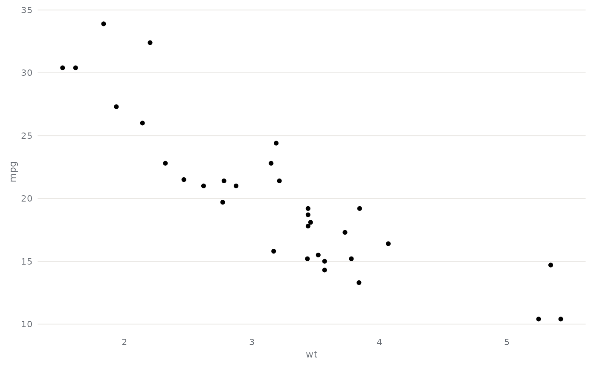

theme_bidser() is the house style used by plot_bids(),
plot_bids_tree(), bids_heatmap() and plot() on confound objects. It
removes non-data ink (panel fills, boxes, most grid lines), left-aligns
titles, and uses a single warm-neutral ink colour so that the data marks
carry the colour.
Examples
if (requireNamespace("ggplot2", quietly = TRUE)) {
ggplot2::ggplot(mtcars, ggplot2::aes(wt, mpg)) +
ggplot2::geom_point() +
theme_bidser(grid = "y")
}
